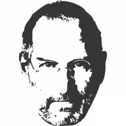

The people who are crazy enough to think they can change the world are the ones who do.
- 24 Feb 1955
- 1969
- Mar 1976
- 28 Aug 1976
- 1978
- May 1980
- Jan 1983
- 8 Apr 1983
- 17 Sep 1985
- Dec 1996
- 6 May 1998
- 5 Oct 1999
- 28 Apr 2003
- 15 Jan 2008
- 24 Aug 2011
- 5 Oct 2012
- Steven Paul was born in San Francisco,
the son of Abdulfattah Jandali and Joanne Schieble.
He is quickly adopted by Paul and Clara Jobs
- Steve Jobs meets Steve Wozniak, 5 years older,
through a mutual friend. Woz and Steve share a love of electronics, Bob Dylan, and pranks
- Woz and Steve show the early Apple I board at the Homebrew Computer Club
- Steve Jobs and Woz show off the Apple I at the Personal Computing Festival in Atlantic City,
with help from Dan Kottke
- At Apple, work starts on the Apple III and the Lisa, while Jef Raskin begins The Book of Macintosh>
- Apple launches the Apple III, which will prove a disastrous flop
- Launch of the Lisa computer. The Lisa team later merges with the Mac team under Steve Jobs's leadership
- PepsiCo CEO John Sculley becomes Apple's CEO after having been wooed by Steve Jobs for several months
- Steve Jobs resigns from Apple and starts NeXT with five other refugees from Apple.
Apple announces it will sue NeXT
- Apple, which was desperately looking for a modern operating system to buy,
eventually buys NeXT for $400 million. Steve Jobs is named "informal adviser"
to Apple CEO Gil Amelio
- Steve Jobs introduces Apple's revolutionary iMac at the Flint Center auditorium in Cupertino,
14 years after he had introduced the Macintosh at that same place
- Introduction of the iMac DVs and of iMovie, the first of Apple's first Digital Hub app
- Apple opens the revolutionary online iTunes Music Store in the US,
after negotiating landmark deals with all major music labels
- At Macworld 2008, Steve Jobs introduces MacBook Air, with the tagline 'the world's thinnest notebook'.
Three years later,
it will come to redefine all of Apple's notebook product line
- Steve Jobs resigns as CEO of Apple,
with the words
'I have always said if there ever came a day when I could no longer meet my duties
and expectations as Apple's CEO,
I would be the first to let you know. Unfortunately, that day has come. >
- Steve Jobs dies at home, surrounded by his family
in a nutshell

- Born
- Died
- Occupa-
tion
- Parents
- Children
- Cause of
death
- Steven Paul Jobs
February 24, 1955
San Francisco, California, U.S.
- October 5, 2011 (aged 56)
Palo Alto, California, U.S.
- Co-founder, Chairman, and CEO of Apple Inc.
Primary investor and CEO of Pixar
Founder and CEO of NeXT
- Paul Jobs (adoptive father)
Clara Jobs (adoptive mother)
Abdulfattah Jandali (biological father)
Joanne Schieble Simpson (biological mother)
- with Brennan;
Lisa Brennan (b. 1978)
with Powell;
Reed Jobs (b. 1991)
Erin Jobs (b. 1995)
Eve Jobs (b. 1998)
- Pancreatic cancer and
respiratory arrest